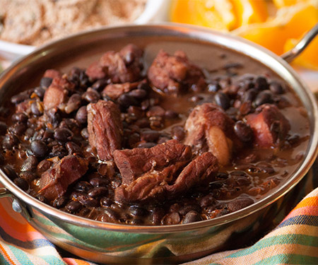

Feijoada

500g of black beans
1 can tomato sauce
2 onions
3 tbsp olive oil
3 cubes vegetable bouillon
3lbs pork sausage
salt to taste
pepper to taste
Method of preparation
Cook the beans
In a pan, add the olive and onions, fry the onions until they are golden brown
Add the beans and sautée for 10min
Add the vegetable bouillon, tomato sauce and water. Leave cooking for roughly 45 min